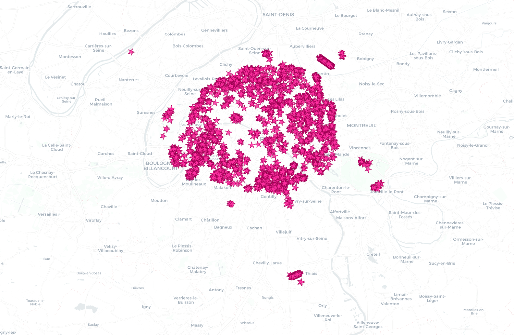

Dataset
Paris Open Data
les-arbres official urban tree inventory
AI Agent Data Exploration Demo
This mini-site shows how an AI agent can go from a raw open dataset to a filtered geographic story: identify a visually interesting subset, extract the records, and render a map that is presentation-ready.
Dataset
Paris Open Data
les-arbres official urban tree inventory
Subset
Cerisier a fleurs
Pink-blossom trees filtered from the full city dataset
Records Shown
4,148
Mapped as star-shaped bloom markers over central Paris
Cerisier a fleurs rows and exported coordinates.The point is not just making a map. It is compressing the first hour of exploratory analysis into a short, inspectable workflow: data discovery, subset definition, verification, and visual output.
This is a concrete example of using AI agents for data exploration rather than only text generation.
Static Output
The static map below is tuned for presentation use: a clean basemap, a tighter crop around the city, and bright blossom markers that read well on slides.
